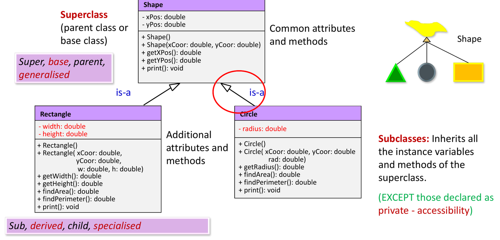
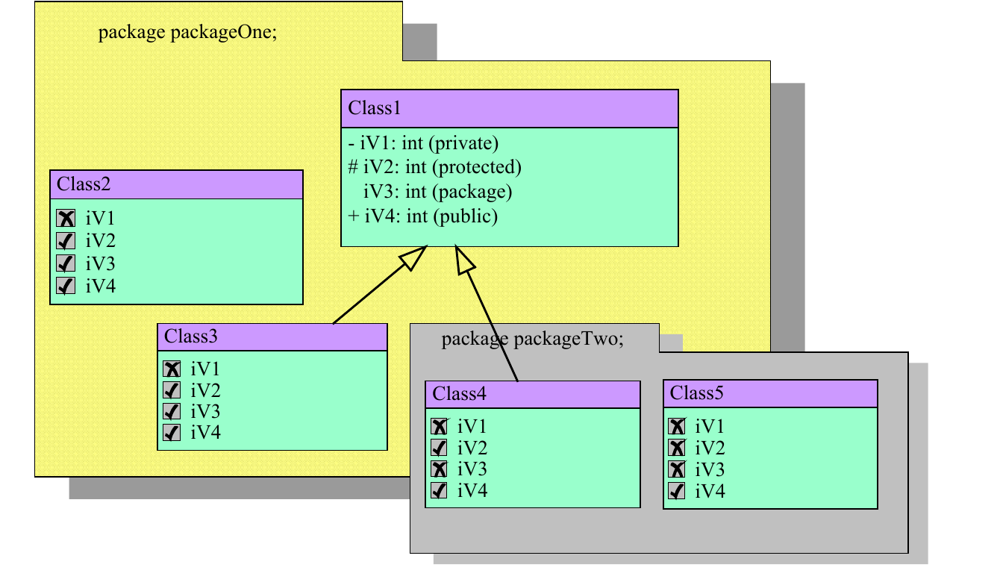

Inheritance, Overriding and Visibility
This chapter covers the first part of Lecture 3: inheritance,
overloading, overriding, visibility, packages, final and
abstract classes. Chapter 3 covers interfaces.
1. Inheritance
Inheritance makes a new class from an existing class. The new class:
- gets (inherits) the fields and methods of the existing class, and
- adds new fields and methods, or changes inherited methods.
This lets you reuse code. The link is an “is-a”
relationship: a Student is a Person.
| Old class | New class |
|---|---|
| superclass, base class, parent class | subclass, derived class, child class |
| more general (generalisation) | more specific (specialisation) |
In Java, write class Rectangle extends Shape. Every
class that has no extends clause extends
java.lang.Object, so Object is the root of
every class.

What the subclass gets
- It inherits all fields and methods except the
privateones. A private field still exists inside the subclass object, but subclass code cannot use its name. Subclass code reaches it through public or protected methods of the parent (for examplegetXPos()). - It does not inherit constructors. Each class writes its own.
- A class can extend only one class.
class C extends A, Bis a compile error. A chain is fine:C extends B,B extends A(indirect inheritance).
Is it really “is-a”?
Use inheritance only when the subclass is a special kind of the superclass.
- A
Circleis not aPoint; a circle has a centre point. Use aPointfield (composition), notextends Point. - A
Cylinderis not aCircle; a cylinder has a circular base. - Role vs inheritance.
FatherandMotherare roles that aPersonplays. They add no new state or behaviour, so they are values (for example an enumFamilyRole), not subclasses.StudentandLectureradd their own fields and methods, so they are real subclasses ofPerson.
2. super
super refers to the parent part of the current
object.
super(args)calls the parent constructor. It must be the first statement in the subclass constructor.super.method()calls the parent version of a method that the subclass overrides.super.fieldreads a parent field that a subclass field hides.
Constructor rules.
- If a constructor does not start with
super(...)orthis(...), the compiler addssuper();(no arguments) for you. - So if the parent has no no-argument constructor
(because it only has
Parent(int x)), the subclass constructor must callsuper(x)itself. Otherwise it does not compile. - A constructor cannot call both
super(...)andthis(...). Both must be the first statement, so only one can be there. (Athis(...)call reaches the parent through the other constructor.) - Parent constructors always run before child constructors.
new C()whereC extends B extends Aprints A’s output, then B’s, then C’s.
Note: Java 25 allows some statements before
super(...). The course uses the rule above:super(...)orthis(...)is the first statement.
3. Overloading and Overriding
These two words look alike, but they work in different ways.
| Overloading | Overriding | |
|---|---|---|
| Where | Same class (or inherited plus new in a subclass) | Subclass changes a parent method |
| Method name | Same | Same |
| Parameter list | Different (number or types of parameters) | Exactly the same |
| Return type | Can be anything; it alone cannot tell two methods apart | Same type (or a subtype) |
| Caused by inheritance? | No | Yes |
| Chosen when | Compile time (static binding), from the declared types of the arguments | Run time (dynamic binding), from the real object |
Overloading
Overloading lets one name do similar tasks for different inputs, for
example print(String), print(int),
print(boolean), instead of printString,
printInt, printBool.
public int findMin(int a, int b) { ... }
public double findMin(double a, double b) { ... }
public int findMin(int a, int b, int c) { ... }
// public int findMin(int x, int y, int z) -> ERROR: same parameter types as aboveOnly the parameter types and their number count. Different parameter names or a different return type do not make a new overload.
Overriding
To override, write a method in the subclass with the same name, the same parameter list and the same return type as the parent method. There are two ways to override a parent method:
- Replacement: the new body replaces the parent body.
It does not call
super.method(). - Refinement: the new body calls
super.method()and adds more work.
class Employee extends Person {
public void printInfo() { // refinement
super.printInfo(); // prints name and age
System.out.println("Salary is " + salary);
}
}The lecture lists three ways of method overriding (a common short question):
- A subclass method overrides a superclass method.
- A subclass method implements an abstract method of an abstract class.
- A concrete class method implements a method of an interface.
Overriding rules
- You cannot reduce visibility. A
publicparent method stayspublicin the child. Overriding it asprotectedor package-private is a compile error. - The child method cannot throw a new or broader checked exception than the parent method (Chapter 5).
- A
finalmethod cannot be overridden. - A
staticmethod is not overridden. A static method with the same header in the child hides the parent one. Java picks the version from the declared type, not the object. - A
privatemethod is not inherited, so it cannot be overridden. A method with the same name in the child is a new, unrelated method. - Use
@Overrideabove an overriding method. If the header does not match a parent method, the compiler gives an error. This catches a parameter-type mistake that would silently make an overload instead. - Inside an override, call the parent version with
super.method(). If you writemethod(), the method calls itself forever and the program ends with aStackOverflowError.
How Java finds the method to run
When an object gets a message, Java looks for a matching method:
- Start in the class of the object.
- If there is no match, look in the parent class.
- Repeat up the chain until a match is found, or until no parent is left. If no class has the method, the compiler reports an error.
4. Visibility (Access) Modifiers
“Access” means read and change.
| Modifier | Same class | Same package | Subclass in another package | Any other class | UML |
|---|---|---|---|---|---|
public |
Yes | Yes | Yes | Yes | + |
protected |
Yes | Yes | Yes | No | # |
| (none) package-private | Yes | Yes | No | No | ~ |
private |
Yes | No | No | No | - |
protectedmeans “stay in the family”: the class, its subclasses, and all classes in the same package.- No modifier means package access. Every class in the same package can use it. A subclass in a different package cannot.
- In a subclass in a different package, the subclass
can use an inherited
protectedmember on itself (or on objects of its own type). It cannot use it through a reference of the parent type.

5. Packages
A package groups related classes in one folder, for
example java.util.
- Write
package packageOne;as the first line of the file. - Use another package’s class with
import java.util.Scanner;or with its full name,java.util.Scanner. - Package names come from the internet domain, reversed:
sg.edu.ntu.projects. - Packages solve name clashes.
casino.game.Deckandstar.cruise.Deckcan both exist. If you import both, a plainDeckis ambiguous; use the full names. - A class with no
packageline is in the unnamed default package.
6. final
final on |
Effect |
|---|---|
| A variable | Its value cannot change after it gets one. static final
makes a constant. |
| A method | Subclasses cannot override it. |
| A class | Nothing can extend it. All its methods are in effect final.
(String is final.) |
Why use final methods and classes:
- Security: subclasses cannot change the behaviour.
- Efficiency: the compiler can bind the call at compile time (static binding), with no search at run time.
7. Abstract Classes
Higher classes in a hierarchy are more general. Sometimes a class is
so general that no real object of it makes sense. A Figure
has an area, but there is no way to compute the area of “a figure”. Make
such a class abstract.
public abstract class Figure {
private String color;
public Figure(String c) { color = c; } // abstract classes CAN have constructors
public String getColor() { return color; }
public abstract double findArea(); // no body, ends with ;
}
public class Circle extends Figure {
private double radius;
public Circle(String c, double r) { super(c); radius = r; }
public double findArea() { return Math.PI * radius * radius; } // implements it
}- An abstract method has no body. A subclass must give the body.
- A class that has at least one abstract method
must be declared
abstract. - An abstract class can have fields, constructors and
normal methods. Its constructor runs when a subclass object is made
(
super(c)). - You cannot create an object of an abstract class:
new Figure("red")is a compile error. You can declare a variable of that type:Figure f = new Circle("red", 2); - A subclass that does not give a body for every
inherited abstract method must itself be declared
abstract. Otherwise it does not compile. - A concrete class has a body for every method (no abstract methods).
abstractcannot go withprivate,finalorstaticon a method. Each of these stops the subclass from overriding, but an abstract method needs an override.- In UML, write the abstract class or method name in italics,
or add
{abstract}.
8. Quiz Traps
- Constructors are not inherited. Private members are inherited in memory but their names are not visible.
- Parent has only
Parent(int)and the child constructor does not callsuper(x): compile error in the child. super(...)andthis(...)in one constructor: compile error.- Same name and same parameter types but a different return type: compile error, not an overload.
- A child method with parameter
(Cat c)does not override a parent method with parameter(Animal a). It is an overload. - Overriding with weaker access (
publictoprotected): compile error. - Static methods hide, they do not override. Private methods are not overridden.
new AbstractClass(): compile error. A missing implementation of an abstract method makes the subclass fail unless it is also abstract.protectedalso gives access to the whole package, not only subclasses.